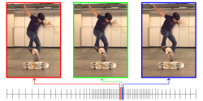
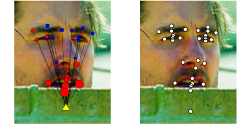
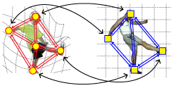
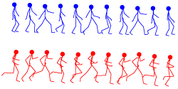
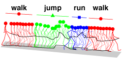

Bipartite-Graph Labels for Fine-grained Object Recognition[
Demo]
Last updated: 2015-12-08 
Space-Time Saliency[
Code]
Last updated: 2014-06-08 
Helen Dataset for Facial Landmark Localization 
Factorized Graph Matching[
Code]
Last updated: 2013-05-08 
Canonical Time Warping (including Generalized Time Warping)[
Code]
Last updated: 2013-05-05 
Aligned Cluster Analysis (including Hierarchical Aligned Cluster Analysis)[
Code]
Last updated: 2010-02-07
Matlab Motion Capture GUI[
Code]
Last updated: 2014-08-30 My Matlab Library[
Code]
Last updated: 2015-08-02